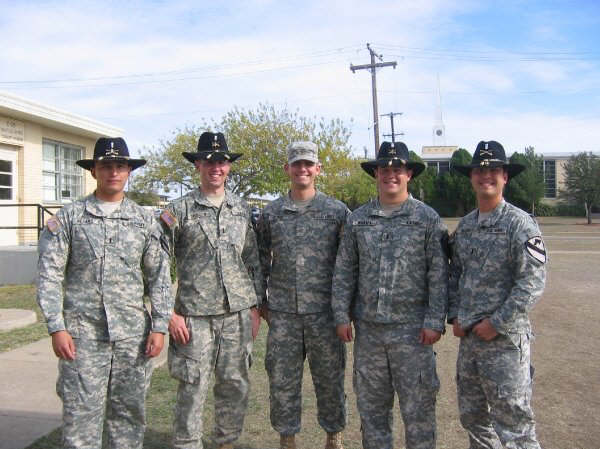

|
Letter from CPT E.
Les Minges
Commander, D Co, 2/8th CAV Iraq
dated: 11Dec09
October 30, 2009 update:
Commander: CPT Les Minges
XO: 1LT Juan Feliciano
1SG Robert Cottle
Red: Gwinn/Mehall
White: Simmons/Rhodes
Blue: Hallsten/Ayala
Intelligence Officer: Evans

March 1, 2009 update:
I'm 1LT Lee Tibbetts, Demon's XO. I just wanted
to send you some updated information about Demons for your website. We're back to our 3 tank platoons: Red, White and Blue, and our HQ
platoon. Gearing up for our next deployment very soon.
Commander: CPT James Mijares
1SG Rob Cottle
HQ: 1LT Lee Tibbetts & SGT James Fornes
Red: 1LT Zach Disbrow & SFC Eric Mehall
White: 2LT Chris Brandt & SFC Daryl Rhodes
Blue: 1LT Mike Pesano & SFC James Allsup
FIST: 1LT Patrick Muldoon & SSG Addison
1SG Cottle arrived about two weeks ago; hopefully he'll be around
for awhile as we've been playing musical 1SGs this year.
I am the third XO of the year, but should be around for a while.
I'm sure I could scrounge up some pictures from our recent training
events (gunner, NTC) and some garrison activities, but all I have at
the moment is a picture of the Demon lieutenants, taken today
actually, after three of them were promoted to 1LT.
Hope this helps, and I plan on sending more frequent updates.
Thanks for all of the support the Angry Skippers give us!
Demons!
1LT Lee Tibbetts
Demon 5

From L to R: 1LT Mike Pesano (Blue 1), 1LT Zach Disbrow (Red 1), 2LT
Chris Brandt (White 1), 1LT Patrick Muldoon (Demon Redlegs), and 1LT
Lee Tibbetts (Demon 5)
|